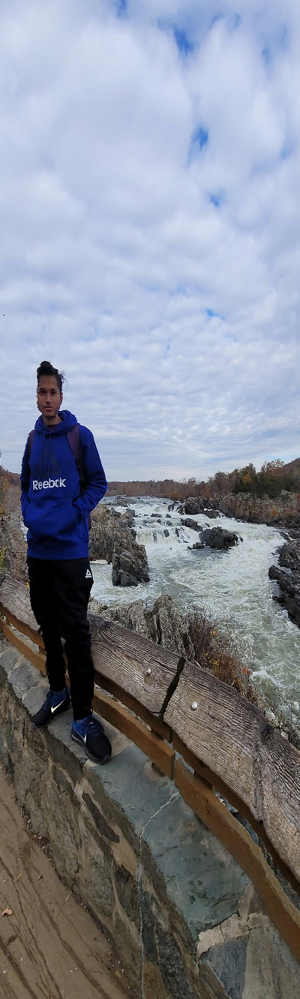
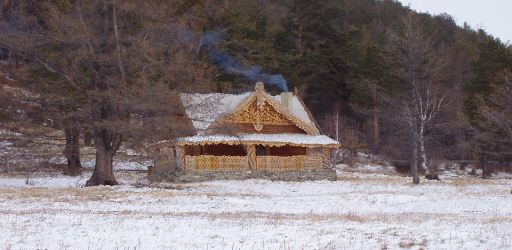
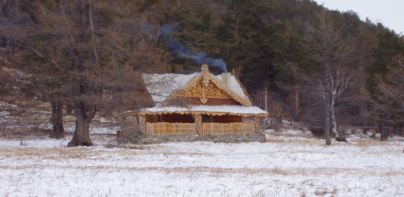
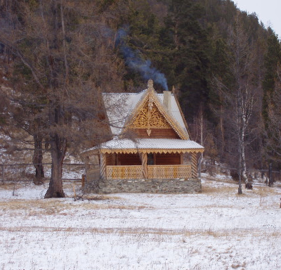

Horizontal Seam with Good Result
Vertical Seam: Good Result
Using seam carving on a picture of mine
Original Image
The Decent Result
Horizontal Shrinking
Vertical Shrinking with the Strange result

Vertical shrink with the Bad Result
Horizontal Seam with Bad result
 

Vertical Seam with Good result
